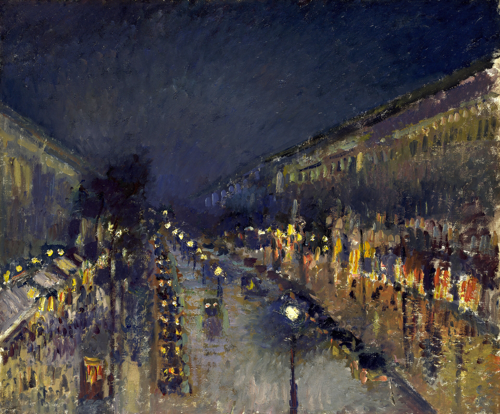

屋顶、路面、车列与灯火汇向中央偏左；上方夜空以倒 V 张开。街道吸入，天空释放。
冷白电灯、暖黄商窗与红橙车灯并置；蓝紫—黄橙近似互补。暖色只占约 15%，却借湿路倒影把整座城市点亮。
点是灯，竖划是倒影，斜向碎笔是车流。毕沙罗离开严格点彩后，以短划、点触与厚涂让光和速度直接发生在笔触里。
事实：Camille Pissarro（1830–1903）是印象派重要组织者，也是唯一参加全部八次巴黎印象派展览的艺术家。1897 年他从旅馆高层画下同一路段的 14 种时刻与天气；本作是其中唯一夜景。
以上为“每日艺术”的观看分析。
作品：Camille Pissarro，The Boulevard Montmartre at Night，1897，布面油画，53.3 × 64.8 cm，The National Gallery, London，NG4119。图像：Wikimedia Commons 文件页，Public Domain Mark。不同法域与用途请复核；图片版权归原作者及相关权利人。赏析为“每日艺术”观看分析。